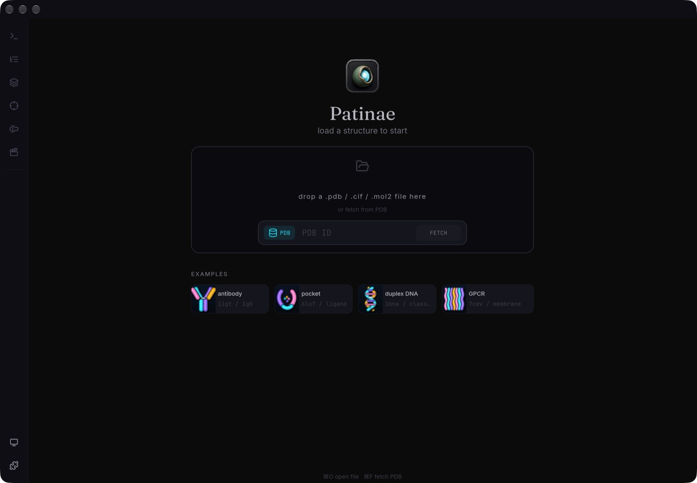
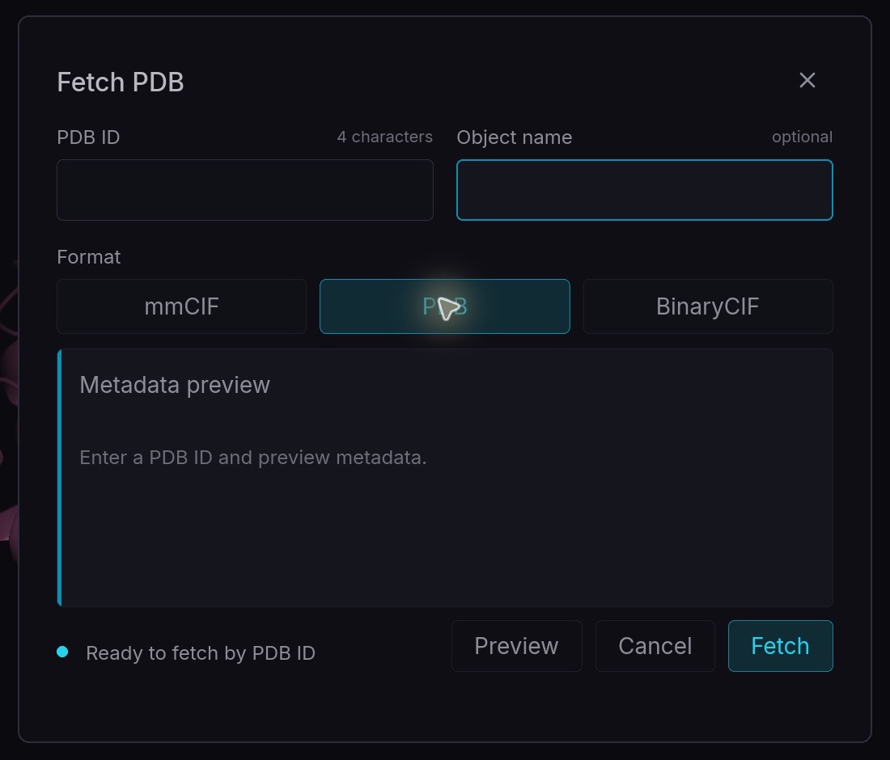
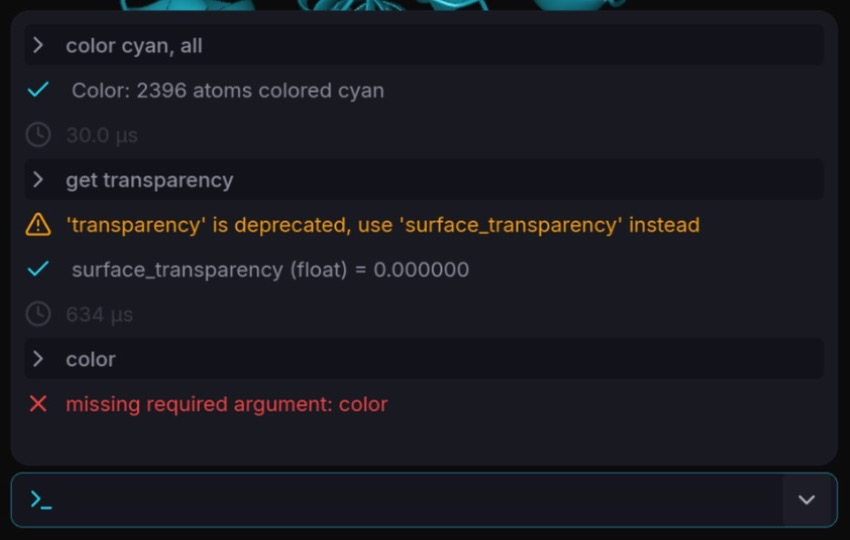
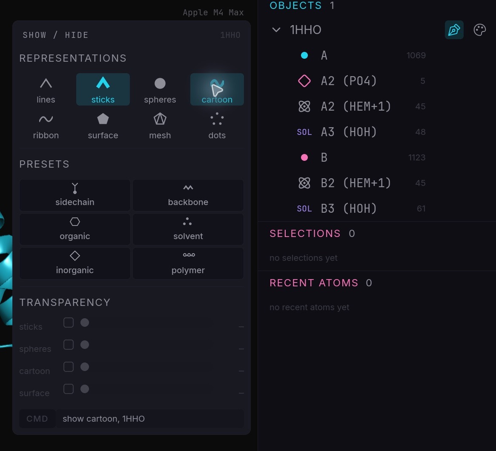
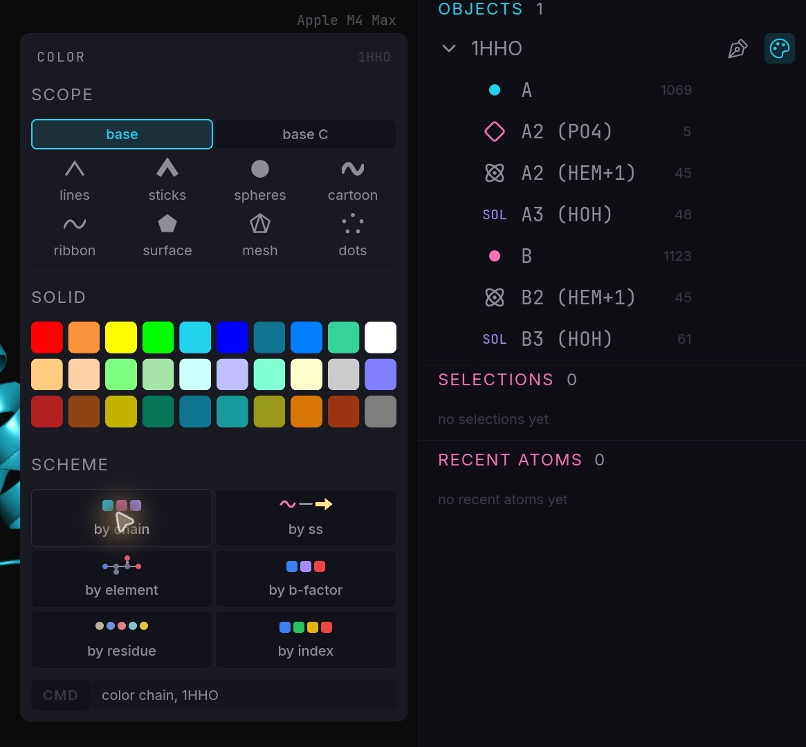
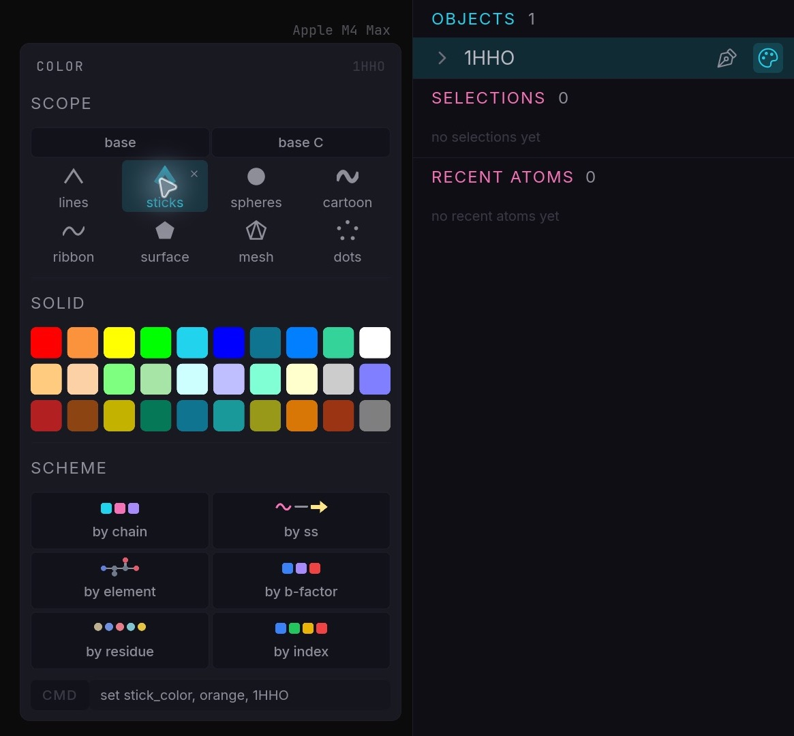
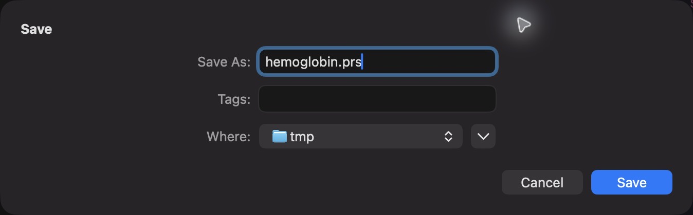

Quick start
with Patinae
Understand the scene, then learn how to change it.
One structure, several decisions
Where do the heme groups sit inside hemoglobin? To answer that question, we need the protein’s overall fold and a closer view of the small groups inside it. Here the protein is drawn as a cartoon, the hemes as sticks, and the two protein chains have different colors.
The example is 1HHO. The coordinates shown here contain one alpha chain and one beta chain, each with a heme group. We’ll use 1HHO for the guided examples, then explore a different structure, 4HHB, in the final practice.
| Part of the scene | What it means |
|---|---|
| Object | A loaded structure with a name, coordinates and atom information. |
| Representation | How to draw it: a cartoon for the fold, sticks for bonds, a surface for the outer shape. |
| Color | What to distinguish: one fixed color, or a scheme based on chains, elements or another property. |
| Setting | A value that controls how Patinae looks or behaves, from stick thickness to the interface theme. |
| Camera | Where you look from, how close you are and which part is in view. |
A command asks Patinae to perform an action. Many actions also have buttons or menu controls. Both routes can change the scene and the application’s settings.
Drag the model to explore it. As you work through the guide, ask two questions: what am I changing, and what do I want that change to reveal?
Over the next few sections, we’ll explore how Patinae works: how to load a structure, control the camera, choose representations and colors, and adjust settings using commands and the interface.
You can follow along in the desktop app—we’ll cover installation and your first launch in the next section—or work directly on these pages. The pages include a web version of Patinae, so you can manipulate the structure and practice the same command language as in the desktop app. The embedded layout provides a molecular view and a command prompt; the menus and Objects panel shown in the screenshots belong to the desktop app.
For the biology behind chains, residues and structure files, see Structural biology 101.
Install and open Patinae
If you’re following along in the desktop app, start by downloading it from the latest release. Choose the version for your computer below, then open Patinae. If you’re following along in the browser, you can continue to the next section, Load a structure; the example is already loaded here.
| Platform | First launch |
|---|---|
| macOS · Apple Silicon | Open Patinae.dmg, drag Patinae to Applications, then open it. |
| Windows · x86_64 or ARM64 | Run the patinae-setup-windows-…exe installer matching your processor, then launch Patinae from the Start menu. |
| Linux · x86_64 or ARM64 | Extract the matching patinae-linux-…tar.gz archive. Open a terminal in the extracted directory and run ./patinae. |
Your first launch
Patinae opens on a welcome screen where you can open a file, fetch a structure from the PDB or try one of the examples.


You can load a structure directly from this screen:
- Fetch by PDB ID. Enter an identifier in the PDB ID field and click Fetch or press Enter.
- Open a file. Click the folder icon or the drop area above the PDB field to choose a local file, or drag a structure file into the window.
- Try an example. Click one of the Examples cards to load an antibody, a ligand-binding pocket, duplex DNA or a GPCR.
- Reopen recent work. When recent files are available, they appear under Recent; click a card to open one.
Once a structure loads, it appears in the molecular view. The next chapter walks through loading 1HHO.
The browser exercises need WebGPU. If the interactive view cannot start, the text and command examples remain available, and you can follow the same steps in the desktop application.
Load a structure
A structure file supplies coordinates and atom information. Loading it creates a named object in Patinae. Its name is how you find it in the Objects panel and refer to it in commands.
In the browser, 1HHO is already loaded for you. In the desktop app, choose one of the routes below to load it.
Fetch from the welcome screen
Enter 1HHO in the PDB ID field on the welcome screen, then click Fetch or press Enter. Wait for the structure to appear.
Or open a local file
Download 1HHO.pdb, then drag it into the window. You can also click the folder icon on the welcome screen to choose the file, or use File → Open….
Fetch from the File menu
File → Fetch PDB… is another way to download a structure, including when one is already open. Enter 1HHO in PDB ID, leave Object name empty, choose PDB, then click Fetch. Patinae uses the PDB ID as the object name automatically.


Choose just one route; you do not need to load the example twice. The downloaded file appears as 1HHO in Objects, as in the screenshots; Fetch uses 1hho. Whenever a command refers to an object by name, use the name shown in your Objects panel.
Once the structure is loaded, you can work with menus or commands. We will introduce the command equivalents after explaining their syntax.
Open a saved session
Structure files contain the molecular data you start from. We covered these formats in Structural biology 101: Databases and formats. As you work in Patinae, you also choose how to show those structures: which representations to use, how to color them and where to place the camera.
A session is the state of your work in Patinae. Saving it as a .prs file keeps the loaded structures together with their representations, colors, display settings and camera view. A session can contain several structures—for example, two proteins arranged for comparison.
In the desktop app, you can open a .prs file through File → Open…, just as you would open a structure file. Patinae restores the saved scene, so you can continue without loading and styling everything again. You can also open a session prepared by someone else and explore or edit their scene. Later in this guide, we’ll save the scene you build.

The command language
The command line, called the REPL in Patinae’s interface, lets you give the application written instructions. On desktop, it appears at the bottom of the molecular view after you load your first structure. On these pages, use the prompt below the embedded view.
Click the prompt, type a command and press Enter to run it. In the desktop app, ⌘L on macOS or Ctrl+L on Windows and Linux moves focus to the prompt, ready for typing.
Click the arrow at the right end of the desktop command bar to expand or collapse the history of commands and their output. Scroll through it to review what you ran and how Patinae responded. In both the desktop app and the embedded web version, use ↑ and ↓ with the prompt focused to recall earlier commands, edit them and run them again.
If the desktop completion menu is open, the arrow keys move through suggestions instead. Tab or Enter accepts a suggestion; press Enter again when the command is complete. Press Esc to close the suggestions and use the arrow keys for history.


How a command is written
A command names an action and supplies its arguments: the information needed to carry it out. For example:
color cyan, all| Part | Meaning |
|---|---|
color | The command: change color. |
cyan | The first argument: which color to use. |
all | The second argument: which atoms to affect. |
Put a space after the command name and commas between arguments. Write color cyan, all, with no comma after color. An argument can itself contain spaces: in show sticks, resn HEM, resn HEM is one argument.
Run the color command above, then . The representation and camera stay the same.
Arguments depend on the command
Arguments have an order and a meaning defined by each command. Some are optional: color cyan uses all atoms by default. Some commands work without arguments, such as orient and help. Named arguments use name=value:
zoom all, buffer=5Here all is the target and buffer=5 adds a margin around it. The comma still separates the arguments.
Read the response
Running a command asks Patinae to do something: change the scene, report a value or explain another command. Its output tells you what happened. The desktop REPL distinguishes three kinds of message:
| Message | Meaning and example |
|---|---|
| Normal output | The command completed successfully and returned a result. For example, color cyan, all reports Color: 2396 atoms colored cyan for this structure. The reply tells you how many atoms it affected; the count depends on the structure you loaded. |
| Warning | The command ran, but its response draws your attention to something you should check. For example, get transparency reports 'transparency' is deprecated, use 'surface_transparency' instead. The old setting name is still understood, so Patinae also returns its value. Use get surface_transparency in new commands. |
| Error | The command was not executed, and the response explains why it failed. For example, color on its own reports missing required argument: color. Patinae needs a color value before it can carry out the action. Add the missing argument—for example, color cyan, all—and try again. |
One command can produce several messages, as the warning followed by a normal value in the screenshot shows. Some successful commands mainly change the view and print little or no additional text.
Let help explain the next command
Use help to list available commands. Give it a command name to see the description, usage, argument meanings, defaults and examples.
helphelp colorhelp showhelp setIn the output of help color, square brackets mark optional arguments; do not type those brackets. The examples show complete commands you can adapt. You do not need to memorize every argument.
Just enough about targets
Many commands accept a target, also called a selection. For this guide, use these ready-made expressions: all for all atoms, polymer for the protein in this example, and resn HEM for the heme residues. An object name such as 1HHO targets that object. Building more precise selections belongs to the separate Selection algebra lesson.
The * wildcard
In a name pattern, * matches zero or more characters. For example, name C* matches atom names beginning with C, such as C, CA and CB. To color the matching atoms cyan:
color cyan, name C*This is a pattern for atom names, not a chemical-element test. The wildcard is useful where an argument accepts a name pattern; it does not replace arbitrary pieces of command syntax.
Command equivalents for loading, once the REPL is available
In the desktop app, these perform the same operations as Open and Fetch. Replace the local path with your file’s location; put paths containing spaces in double quotes. Fetch also works in the embedded view and adds another object. After trying it here, use Reset chapter to return to the prepared scene.
load /path/to/1HHO.pdbfetch 1hho, type=pdbYou can now read a command as an action plus its arguments. Next, we’ll use that syntax to control the camera.
Camera control
The camera determines where you look from, what sits in the center of the view and how much of the structure fits on screen. Camera commands change your view of the scene while keeping the atom coordinates, representations and colors intact.
You have already moved the camera by dragging. Commands let you make the same kinds of adjustments with explicit targets and values. We’ll use the whole structure and the hemes to compare them.
Center, fit or orient?
| Command | What changes |
|---|---|
center resn HEM | Place the center of the hemes at the center of the view, keeping the viewing direction and camera distance. |
zoom resn HEM, buffer=5 | Center and fit the hemes in the view, keeping the viewing direction. The buffer adds a margin of 5 Å around the target. |
orient resn HEM | Choose a viewing direction from the target’s principal axes—the main directions of its shape—and fit it in the view. |
Try the three commands in the table in order: center on the hemes, fit them in the view, then orient to them. These commands use the hemes as a camera target. They do not hide the protein, although a close view may place parts of it outside the frame.
For a whole-structure overview, use:
orient allzoom all, buffer=5orient finds a useful starting angle from the geometry; you can still adjust it to show the feature you want to explain.
Turn and move by a known amount
turn rotates the view by an angle in degrees. move shifts it by a distance in ångströms. Both take an axis and a value:
turn y, 30move x, 3Run the commands above to turn by 30° and move by 3 Å. These are relative changes: running a command twice applies the adjustment twice. To undo that sequence, reverse the last shift with move x, -3, then reverse the turn with turn y, -30.
The axes are relative to the view: x runs horizontally, y vertically and z along the viewing direction. Turning around z rolls the image; moving along z changes the viewing distance.
A turn uses the camera’s origin as its center of rotation. center and zoom set this point from their target. You can also set it explicitly with origin resn HEM, for example before turning around the heme region.
Control visible depth
Clipping limits the depth visible through the scene, which can help expose a buried feature. Atoms outside the clipping planes are still loaded. clip slab, 20 sets the visible layer to 20 Å thick; it does not change the camera’s magnification.
clip slab, 20Try the 20 Å layer with the command above, then run zoom all, buffer=5 to restore a depth range that contains the structure. For finer control, clip near and clip far adjust the front and back planes; help clip gives their syntax and examples.
Keep a useful camera view
Store a camera view before exploring another angle. Run the first command below, turn or move the view, then run the second to return:
view overview, storeview overview, recallA named view keeps the camera orientation, position and clipping planes. Recalling it leaves your current colors and representations in place. A saved session, introduced later, preserves the wider scene.
reset returns the camera to its default orientation and fits the whole scene. This differs from Reset chapter, which restores the lesson’s prepared structure and appearance as well.
The same action with clicks
In the desktop app, the View menu provides these whole-scene actions:
| Menu action | Command equivalent |
|---|---|
| View → Center | center all |
| View → Zoom All | zoom all |
| View → Orient | orient all |
| View → Reset | reset |
Zoom All also has the shortcut ⌘0 on macOS or Ctrl+0 on Windows and Linux. The mouse and trackpad gestures introduced in Objects and the view remain available alongside these commands.
Use commands when you want an exact angle, distance or target, and direct manipulation when you want to explore by eye. Before continuing, return to the overview with orient all and zoom all, buffer=5. Next we’ll change how the structure is drawn.
Representations: what do you want to see?
A structure contains atom positions. A representation turns them into visible shapes. The same coordinates can be drawn in several ways, each emphasizing a different level of detail.
Try the views below in the embedded scene. Each button changes the protein’s representation; the camera, colors and other atoms keep their current state.
| Representation | What it shows well |
|---|---|
| A simplified path through the protein, with helices and sheets. Use it to follow the fold; it leaves out individual side-chain atoms. | |
| Thin lines for bonds. Useful for an overview of atomic connectivity with relatively little visual bulk. | |
| Thick bonds that make local geometry easier to see. Good for a ligand or binding site; a whole protein can become crowded. | |
| Atoms drawn with radii. Useful for packing and the space occupied by atoms; bonds and buried groups become harder to see. | |
| A calculated molecular envelope. Useful for shape, grooves and pockets; it hides much of the internal structure. |
Choose the representation that makes your question easiest to answer. You can also combine them to show different levels of detail.
Combine levels of detail
For hemoglobin, a cartoon explains where the protein folds around the hemes, while sticks reveal the heme bonds. You can show both in the same scene:
hide everythingshow cartoon, polymershow sticks, resn HEMRun these three commands in order. Notice which part each representation explains.
Show, hide and replace
show adds a representation. hide removes it from the view. as replaces the existing representations for its target with one representation. These operations leave the atoms loaded.
With the cartoon-and-heme combination visible, compare show sticks, polymer with as sticks, polymer (the Sticks button in the table). The first adds sticks alongside the cartoon; the second leaves only sticks for the protein. The hemes are outside that target and keep their appearance. The representation buttons in the opening table use as in the same way: for example, as surface, polymer replaces the protein’s representations with a surface.
The same action with clicks
In the desktop app, hover over your structure’s row in Objects and click the pen-nib icon, Representations. Click cartoon to show or hide it. A highlighted representation is visible.
For the object shown in the screenshot, these actions correspond to show cartoon, 1HHO and hide cartoon, 1HHO. Hover over a control to preview its command at the bottom of the menu.


If you fetched the structure, use 1hho in place of 1HHO in these commands.
The menu on the object row acts on the whole object. The command examples above use polymer or resn HEM to give its protein and hemes different representations. Before continuing, restore the cartoon-and-heme view with the three commands under Combine levels of detail.
Colors and color schemes
A representation decides what shapes to draw. Color decides what differences to emphasize. You can change either independently: recoloring a cartoon does not turn it into sticks.
Base colors and representation colors
color changes the base color of atoms. Representations reuse these colors unless they have an explicit color of their own. This lets the cartoon, sticks and spheres share one color scheme.
You can also give a representation its own color through settings such as stick_color or cartoon_color. An explicit representation color takes priority over the base color. We’ll try that in the next section, Settings.
A color is a value; a scheme is a rule
A named color such as cyan, gray or orange gives the target atoms one base color. A scheme assigns their base colors using an atom or residue property. Both are arguments to color.
color cyan, polymerRun this command to give the protein atoms one base color. Then try the choices in the table, including chain, to compare a fixed color with schemes on the same cartoon. Each button applies its color argument to polymer:
| Color argument | What it communicates |
|---|---|
| One neutral color. Useful when the protein provides context for a highlighted ligand. | |
| Different chains receive different colors. Useful for telling subunits apart. | |
| Color by chemical element. Most useful with atoms and bonds visible, rather than only a cartoon. | |
| Color by assigned secondary structure, such as helices, sheets and loops. | |
| A color progression along residue indices, useful for following the sequence through the fold. | |
| Color by residue type, useful when comparing the chemical character of amino acids. |
A color only has the meaning given by its scheme. Chain colors distinguish identities; they do not rank chains or measure a property. Tell your audience which scheme a figure uses.
Use two schemes for two questions
Apply chain to the protein using the table above, so the two subunits are easy to follow. Then give the hemes element colors so their chemistry is easier to read:
color cpk, resn HEMThe cartoon inherits the protein’s chain colors, and the sticks inherit the hemes’ element colors. The representations themselves stay the same.
The same action with clicks
In the desktop app, hover over your structure’s row in Objects and click the palette icon, Colors. Keep base selected under Scope. Click a solid swatch to choose a fixed color, or a Scheme button such as by chain or by element to apply a color scheme.
For the object shown in the screenshot, by chain corresponds to color chain, 1HHO. Hover over a control to preview its command at the bottom of the menu.


The menu on the object row acts on the whole object. The command examples above use polymer or resn HEM to give its protein and hemes different colors. In the next section, we’ll use the same menu to give sticks their own color and see how that interacts with the base colors.
Settings: customize Patinae
Settings control how Patinae looks and behaves across the application: molecular representations, rendering, camera controls and the interface itself. Each setting stores a value that Patinae uses until you change it.
A setting is not itself a command. set changes its value, get reads it, and unset resets it to a default or inherited value.
Even the interface theme is a setting. In the desktop app, get theme reports the current choice. Use set theme, light for the light theme, set theme, dark for the dark theme, or set theme, system to follow your operating system’s appearance.
Tune a representation
For this exercise, we’ll use settings whose effect you can see on the molecule. For example, stick_radius controls how thick sticks are, and sphere_scale scales the displayed atom spheres.
The embedded view isolates the hemes so the effect is easy to see. The examples below use the object name 1HHO; if you fetched the structure, substitute 1hho. On desktop, prepare the same view:
hide everythingshow sticks, resn HEMorient resn HEMzoom resn HEM, buffer=5Read the current radius before changing it:
get stick_radiusKeep that value so you can restore it later. Use the two commands below to compare thinner and thicker sticks on the hemes:
set stick_radius, 0.15set stick_radius, 0.35| Part | Role |
|---|---|
set | The command: change a setting. |
stick_radius | The setting name, supplied as the first argument. |
0.35 | The new value, supplied as the second argument. |
The sticks remain sticks and keep their colors. The atom positions and bond lengths do not change. Only the thickness used to draw them changes.
A stored setting or an argument for one action?
set stick_radius, 0.35 changes a value that remains in effect for later drawing. By contrast, zoom all, buffer=5 supplies a margin to that zoom action. Both use arguments, but only the first changes a stored setting.
Global and local settings
A setting has a scope: where its value applies. Without a target, set changes the global value. For settings that support local values, add an object name or a selection as the third argument:
| Scope | Example and effect |
|---|---|
| Global | set stick_radius, 0.35 sets the stick radius for objects that inherit the global value. |
| One object | set stick_radius, 0.15, 1HHO gives this object its own stick radius. Other objects keep their existing values. |
| Part of an object | set stick_color, orange, resn HEM gives the heme atoms an explicit stick color. Other atoms and other representations keep their colors. |
A local value is an override: it takes precedence over the value it would otherwise inherit. Changing the global stick radius does not replace an object’s explicit radius. Use get stick_radius, 1HHO to inspect the value for that object.
The supported scope depends on the setting. theme is global; stick_radius also supports object values; representation color settings such as stick_color also accept atom selections. Here, resn HEM is the same ready-made target used earlier; the Selection algebra lesson explains how to build your own.
Reset a value with unset
unset removes an explicit setting value. At global scope, it restores Patinae’s default. At local scope, it removes the override so the object or selected atoms inherit a value again:
| Command | Result |
|---|---|
unset stick_radius | Restore the global radius to its default, 0.25. Object overrides remain in place. |
unset stick_radius, 1HHO | Remove this object’s radius override. It now uses the current global radius. |
unset stick_color, resn HEM | Remove the explicit stick color from the heme atoms and return to inherited coloring. |
unset does not undo the previous command or recover an earlier custom value. To restore a value you recorded with get, use set with that value. In the browser, Reset chapter restores the whole prepared scene.
Use help set, help get and help unset to review their syntax. To reset the global stick radius in this example, run unset stick_radius from the table above. If you also tried the object override above, remove it with unset stick_radius, 1HHO.
Give sticks their own color
Now connect settings to the base colors introduced in the previous section. stick_color controls the color used by sticks; cartoon_color and surface_color do the same for their representations. These settings accept named colors and color schemes. Start by giving sticks an explicit orange color:
set stick_color, orange, 1HHOThe base colors and the colors of other representations remain unchanged.
Next, change the base colors of the same atoms:
color cyan, 1HHOThe base color changes to cyan, but the sticks remain orange: their explicit color takes priority. Other representations that inherit base colors would now appear cyan.
Remove the explicit stick color:
unset stick_color, 1HHORemoving the stick color override makes the sticks inherit the cyan base color in this prepared scene. If a global stick color has also been set in your own session, unset that value too to return to base coloring.
The same action with clicks
In the desktop app, hover over your structure’s row in Objects and click the palette icon, Colors. Under Scope, choose the sticks icon, then click the orange swatch.
For the object shown in the screenshot, this corresponds to set stick_color, orange, 1HHO. Hover over a control to preview its command at the bottom of the menu.


To repeat the base-color step, select base and click the cyan swatch. This runs color cyan, 1HHO; the sticks remain orange. Selecting base only changes what your next color choice affects; it does not remove an existing representation color.
To remove that override, click the small × at the top right of the sticks tile. Hovering over it shows unset stick_color, 1HHO, the command it runs. The sticks now inherit the cyan base color.
The object row determines which atoms you affect. The menu’s Scope controls determine which color you change: base, sticks, cartoon and so on. To finish this exercise, remove the stick color override and restore element colors with color cpk, 1HHO .
You can now change a setting, check its scope and remove an override. The next section shows how to keep the scene you have built.
What do you want to keep?
Before saving, choose the representations, colors and camera view you want to keep. The examples below save your current scene; choose the output that preserves what you need. The saving and export steps below use the desktop app; the embedded lesson view does not provide file export.
| Output | Use it for |
|---|---|
| PRS session | Continuing work on the scene: loaded structures, visual state and camera. |
| PNG image | Showing this view in a slide or document. The image cannot be rotated or edited as a molecular scene. |
| PDB coordinates | Taking the structure into another tool. It does not preserve your representations, colors and camera. |
Save an editable session
Choose File → Save…, enter hemoglobin.prs, choose a folder and click Save.


The command equivalent is:
save hemoglobin.prsA relative filename saves in the current working directory. Use the dialog to choose a destination, or supply a full path. Reopen the session with File → Open… or load hemoglobin.prs.
Export an image or coordinates
Choose File → Export PNG… to save a picture. For a specific width and height in pixels:
png hemoglobin.png, 1600, 1200To save the loaded atom coordinates instead:
save hemoglobin.pdb, allThe filename extension changes what save writes. A PRS session and a PNG image make a useful pair: one for editing, one for sharing. Next, you’ll use these tools independently on 4HHB and produce two views of your own.
Independent practice: 4HHB
Apply what you have learned to 4HHB, human deoxyhemoglobin. Your goal is to prepare two views that answer different questions: how are the protein chains and hemes arranged? and what does one heme look like inside its protein environment?
The embedded view has 4HHB loaded as gray lines. Work through the tasks yourself using the command prompt; open a hint when you need one, then type its commands or use Run. Stay on this chapter while working: switching chapters or using Reset chapter replaces your scene and clears the camera views you have stored.
Start with the new structure
If you are working in the embedded view, skip this setup and start with task 1. In the desktop app, save your earlier work if you want to keep it, then run reinitialize to clear the current session:
reinitializeOn desktop, the welcome screen returns, and the command line is unavailable until you load a structure. Enter 4HHB in the welcome screen’s PDB ID field and click Fetch. You can also download 4HHB.pdb and open that file from the welcome screen.
Wait for the structure and command line to appear. Then set the initial appearance with as lines and color gray. In the embedded view, this preparation is already done.
The examples in the hints use the object name 4HHB, as loaded on this page. If you fetched it, substitute its name 4hhb. For the close-up tasks, use this supplied target: byres (first resn HEM). It selects the complete first heme residue. Use it as given here; building your own selection expressions belongs to the Selection algebra lesson.
1. Read the structure before styling it
On desktop, expand the object in Objects. Identify the protein chains, hemes and water. How many protein chains and hemes are present? How does this compare with the 1HHO file used earlier? In the browser, inspect the structure and use the linked PDB entry to check its components.
Check the inventory
4HHB contains four protein chains and four hemes, one per chain. A and C are alpha chains; B and D are beta chains. The earlier 1HHO file contains two protein chains and two hemes. The difference reflects the contents of these coordinate files; 4HHB gives you the four-subunit assembly to explore.
2. Build an overview that explains the assembly
Make the protein fold and the positions of all hemes easy to see. Remove visual clutter, choose suitable representations, distinguish the protein chains and preserve chemical-element colors on the hemes. Frame the whole structure.
Check: can a reader follow each chain and locate all four hemes? Compare chain colors with secondary-structure colors, then keep the scheme that best answers the overview question. Write one sentence explaining your choice.
Hint: separate the two visual jobs
A cartoon can show the protein fold while sticks show the hemes. Start with hide everything, then use show for each target. color chain, polymer distinguishes chains; color cpk, resn HEM colors heme atoms by element. Compare color ss, polymer before choosing your final scheme. Use orient all and zoom all, buffer=5 as a starting camera view.
3. Compare two ways of drawing one heme
Bring the first heme into view. Compare sticks, spheres, and both together on this same target. Keep enough protein context to see where the heme sits. Choose a representation for explaining bonds and another for explaining the space occupied by atoms.
Check: explain why show can combine representations and as replaces them. Finish with the heme shown as sticks so you can compare thickness and color in the later tasks.
Hint: keep the target fixed
zoom byres (first resn HEM), buffer=5show spheres, byres (first resn HEM)as spheres, byres (first resn HEM)as sticks, byres (first resn HEM)The first show adds spheres to the existing sticks. The next as leaves only spheres on that heme. The last command returns it to sticks.
4. Keep an overview and a close-up
Compose an overview and store it as tetramer. Compose a close-up of the first heme and store it as heme_detail. Use a small turn or move to improve the close-up. Try a thinner clipping layer to look into the protein, then choose a depth that keeps the feature you want to explain visible.
Check: recall each named view. The camera should change while the representations and colors remain as you set them. Keep both views for the final images.
Hint: store after composing
First compose the whole-structure overview, then store it:
view tetramer, storeNow zoom to byres (first resn HEM), adjust the angle and depth, then store that close-up:
view heme_detail, storeRecall the two views to compare them:
view tetramer, recallview heme_detail, recallTry turn y, 20, move x, 2 or clip slab, 20 while composing. A new zoom fits the target and resets its clipping range, so apply your final clipping adjustment afterwards.
5. Predict which color will be visible
Give the first heme an explicit orange stick color. Then change its base atom colors to cyan. Before you run the second command, predict what will happen. Finally, remove the explicit stick color.
Check: the sticks stay orange after the base-color change and become cyan after unset. Explain which value each step changed. Restore element colors on the heme when you are done.
Hint: color and stick_color change different values
set stick_color, orange, byres (first resn HEM)color cyan, byres (first resn HEM)unset stick_color, byres (first resn HEM)color cpk, byres (first resn HEM)6. Test a global value and an object override
Set the global stick radius to 0.15 and the 4HHB object’s radius to 0.35. Change the global value to 0.10. Predict whether the sticks will become thinner, then remove the object override.
Check: the object keeps its explicit radius until you remove it; afterwards it uses the current global value. Use get to check both levels. Finish by choosing a radius that makes the heme readable in both saved views.
Hint: reset the level you changed
set stick_radius, 0.15set stick_radius, 0.35, 4HHBset stick_radius, 0.10get stick_radiusget stick_radius, 4HHBunset stick_radius, 4HHBunset stick_radius would reset the global value instead. It would leave the object override in place.
7. Repeat an action through the interface
On desktop, open Colors on the 4HHB object row. Choose sticks under Scope and assign a color. Read the command at the bottom of the menu, then remove that override with the tile’s small ×. Repeat the same two actions in the command line.
Check: both routes give the same result. Explain why acting on the object row affects all its sticks, while the target in task 5 affects only the first heme. In the browser, practice the commands; this embedded layout does not include the Objects panel.
8. Deliver a scene and two images
Review both saved camera views. Restore your chosen chain colors, element-colored hemes and a useful stick radius. On desktop, save an editable session as 4hhb-study.prs and export an image of each view. Reopen the session and check that you can still recall both views and edit the scene.
Check: write a short caption for each image stating the question it answers and the meaning of its colors. Keep the commands you used so someone else can repeat your choices. If you are working only in this page, finish with the two named views, captions and command list; file export is a desktop step.
Hint: recall before exporting
save 4hhb-study.prsview tetramer, recallpng 4hhb-overview.png, 1600, 1200view heme_detail, recallpng 4hhb-heme-detail.png, 1600, 1200Use the File menu if you prefer to choose a destination folder, or supply full paths in the commands. A PNG records the current view; the session keeps the editable scene and named camera views.
You have finished when your two views answer their questions and you can explain which changes affected the camera, representations, base colors or settings. Use help whenever you need to check a command. The separate Selection algebra lesson develops the next skill: describing exactly which atoms an action should affect.